Extracting and visualizing tidy residuals from Bayesian models
Matthew Kay
2020-01-26
Source:vignettes/tidybayes-residuals.Rmd
tidybayes-residuals.RmdIntroduction
This vignette describes how to use the tidybayes package to extract tidy data frames of draws from residuals of Bayesian models, and also acts as a demo for the construction of randomized quantile residuals, a generic form of residual applicable to a wide range of models, including censored regressions and models with discrete response variables. For a more general introduction to tidybayes, see vignette(“tidybayes”).
Setup
The following libraries are required to run this vignette:
library(dplyr)
library(purrr)
library(tidyr)
library(tidybayes)
library(ggplot2)
library(cowplot)
library(rstan)
library(brms)
library(gganimate)
theme_set(theme_tidybayes() + panel_border())These options help Stan run faster:
Example dataset
We’re going to use a simple dataset to demonstrate residuals that can be applied to discrete and censored outcomes. We’ll generate data from a Normal distribution:
\[ \begin{align*} y^*_i &\sim \textrm{Normal}(0.5,1) \\ y^\textrm{lower}_i &= \lfloor{y^*_i}\rfloor \\ y^\textrm{upper}_i &= \lceil{y^*_i}\rceil \end{align*} \] Or we can write the vectorized version of the model:
\[ \begin{align*} \mathbf{y}^* &\sim \textrm{Normal}(0.5,1) \\ \mathbf{y}^\textrm{lower} &= \lfloor{\mathbf{y}^*}\rfloor \\ \mathbf{y}^\textrm{upper} &= \lceil{\mathbf{y}^*}\rceil \end{align*} \]
We don’t observe each \(y^*_i\), only \(y^\textrm{lower}_i\) and \(y^\textrm{upper}_i\), i.e., the upper and lower bounds of an interval in which \(y^*_i\) lies. This is interval-censored data.
We can generate it as follows:
set.seed(4118)
n = 100
cens_df =
tibble(
y_star = rnorm(n, 0.5, 1),
y_lower = floor(y_star),
y_upper = ceiling(y_star),
censoring = "interval"
)A snapshot of the data looks like this:
## # A tibble: 10 x 4
## y_star y_lower y_upper censoring
## <dbl> <dbl> <dbl> <chr>
## 1 0.180 0 1 interval
## 2 1.05 1 2 interval
## 3 2.05 2 3 interval
## 4 -0.512 -1 0 interval
## 5 0.0323 0 1 interval
## 6 1.18 1 2 interval
## 7 -0.707 -1 0 interval
## 8 0.116 0 1 interval
## 9 0.183 0 1 interval
## 10 0.385 0 1 intervalThis is a typical tidy format data frame: one observation per row.
A graphical depiction of the censoring process might be something like this:
uncensored_plot = cens_df %>%
ggplot(aes(y = "", x = y_star)) +
stat_slabh() +
geom_jitter(aes(y = 0.75, color = ordered(y_lower)), position = position_jitter(height = 0.2), show.legend = FALSE) +
ylab(NULL) +
scale_x_continuous(breaks = -4:4, limits = c(-4, 4)) +
background_grid("x")
censored_plot = cens_df %>%
ggplot(aes(y = "", x = (y_lower + y_upper)/2)) +
geom_dotplot(
aes(fill = ordered(y_lower)),
method = "histodot", origin = -4, binwidth = 1, dotsize = 0.5, stackratio = .8, show.legend = FALSE,
stackgroups = TRUE, binpositions = "all", color = NA
) +
geom_segment(
aes(x = y + 0.5, xend = y + 0.5, y = 1.75, yend = 1.5, color = ordered(y)),
data = data.frame(y = unique(cens_df$y_lower)), show.legend = FALSE,
arrow = arrow(type = "closed", length = unit(7, "points")), size = 1
) +
ylab(NULL) +
xlab("interval-censored y") +
scale_x_continuous(breaks = -4:4, limits = c(-4, 4)) +
background_grid("x")
plot_grid(align = "v", ncol = 1, rel_heights = c(1, 2.5),
uncensored_plot,
censored_plot
)
Model for y_star
Before we fit a model to the censored data, let’s see what an ideal model looks like: we’ll fit a model to y_star. With censored or discrete data in the real-world, we would not be able to fit such a model, because we would not have observations of y_star, only the intervals. But this might help us understand what we’re looking for in a fit that’s working.
## Compiling the C++ model## Start samplingThis looks like this:
## Family: student
## Links: mu = identity; sigma = identity; nu = identity
## Formula: y_star ~ 1
## Data: cens_df (Number of observations: 100)
## Samples: 4 chains, each with iter = 2000; warmup = 1000; thin = 1;
## total post-warmup samples = 4000
##
## Population-Level Effects:
## Estimate Est.Error l-95% CI u-95% CI Rhat Bulk_ESS Tail_ESS
## Intercept 0.52 0.11 0.29 0.73 1.00 2968 2452
##
## Family Specific Parameters:
## Estimate Est.Error l-95% CI u-95% CI Rhat Bulk_ESS Tail_ESS
## sigma 1.02 0.09 0.84 1.20 1.00 2654 2267
## nu 20.98 13.29 5.27 54.94 1.00 2522 2477
##
## Samples were drawn using sampling(NUTS). For each parameter, Bulk_ESS
## and Tail_ESS are effective sample size measures, and Rhat is the potential
## scale reduction factor on split chains (at convergence, Rhat = 1).Residuals
add_residual_draws() operates much like add_fitted_draws() and add_predicted_draws(): it gives us draws from the posterior distribution for each residual:
cens_df %>%
add_residual_draws(m_ideal) %>%
ggplot(aes(x = .row, y = .residual)) +
stat_pointinterval()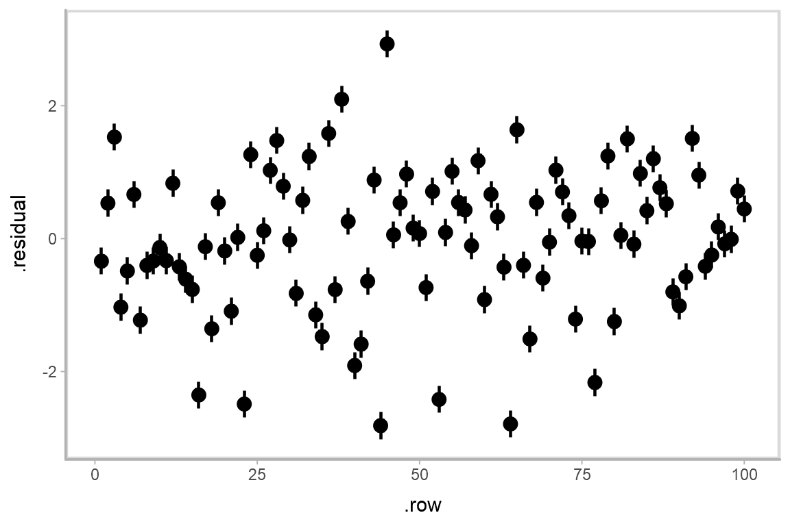
This is a typical residual plot, though with the addition of the uncertainty associated with each residual afforded by generating draws from the distribution associated with each residual.
Let’s check the QQ plot:
cens_df %>%
add_residual_draws(m_ideal) %>%
median_qi() %>%
ggplot(aes(sample = .residual)) +
geom_qq() +
geom_qq_line()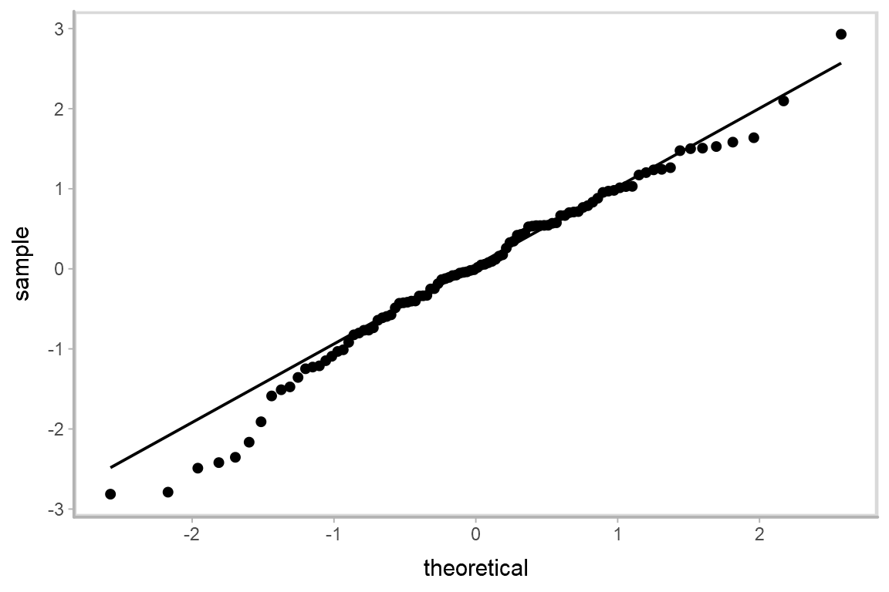
This is a typical way of looking at residuals. However, this type of residual will not generalize to discrete and censored models, so let’s consider something else…
Probability residuals and quantile residuals
To derive a more general form of residual, we will use the posterior predictive distribution, \(\mathbf{y}^{*\textrm{rep}}|\mathbf{y}^*\). This gives us the model’s predictive distribution for a replication of \(\mathbf{y}^*\), denoted \(\mathbf{y}^{*\textrm{rep}}\). In particular, for each observation, we will calculate the predicted probability of seeing an observation less than or equal to the observation we actually got:
\[
p^{*\textrm{resid}}_i = P(y^{*\textrm{rep}}_i \le y^*_i|\mathbf{y}^*)
\] This is one type of Bayesian posterior predictive p-value; I will call it a probability residual (p_residual) by analogy to quantile residuals. If the predictive distribution is well-calibrated, these probabilities should be uniform (in general these will not be quite uniform due to the double use of \(\mathbf{y}*\); a future iteration of this article will demonstrate the use of leave-one-out posterior predictive distributions to address that issue).
If we apply the inverse cumulative distribution function (CDF) of the standard Normal distribution to these probability residuals, the result should be approximately standard Normal. These are quantile residuals (z_residual):
\[ z^{*\textrm{resid}}_i = F_{\textrm{Normal}}^{-1}(p^{*\textrm{resid}}_i) \]
cens_df %>%
add_predicted_draws(m_ideal) %>%
summarise(
p_residual = mean(.prediction < y_star),
z_residual = qnorm(p_residual)
) %>%
ggplot(aes(sample = z_residual)) +
geom_qq() +
geom_abline()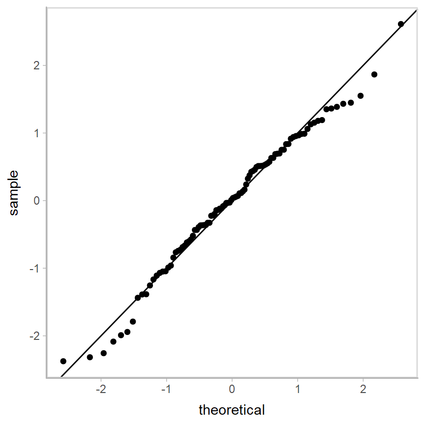
This QQ plot shows us the model fits okay.
Basic interval-censored model
Assuming a situation where we do not have access to the original (uncensored) data, we will perform a regression on the interval-censored data. In brms, we can do this by specifying the lower (y_lower) and upper (y_upper) bounds on each observation, and the censoring type (censoring), which in this case is "interval" for all observations.
## Compiling the C++ model## Start samplingThe results look like this:
## Family: gaussian
## Links: mu = identity; sigma = identity
## Formula: y_lower | cens(censoring, y_upper) ~ 1
## Data: cens_df (Number of observations: 100)
## Samples: 4 chains, each with iter = 2000; warmup = 1000; thin = 1;
## total post-warmup samples = 4000
##
## Population-Level Effects:
## Estimate Est.Error l-95% CI u-95% CI Rhat Bulk_ESS Tail_ESS
## Intercept 0.56 0.11 0.34 0.77 1.00 3281 2615
##
## Family Specific Parameters:
## Estimate Est.Error l-95% CI u-95% CI Rhat Bulk_ESS Tail_ESS
## sigma 1.09 0.08 0.94 1.27 1.00 3422 2450
##
## Samples were drawn using sampling(NUTS). For each parameter, Bulk_ESS
## and Tail_ESS are effective sample size measures, and Rhat is the potential
## scale reduction factor on split chains (at convergence, Rhat = 1).Again, add_residual_draws() lets us look at the residuals:
## Warning: Results may not be meaningful for censored models.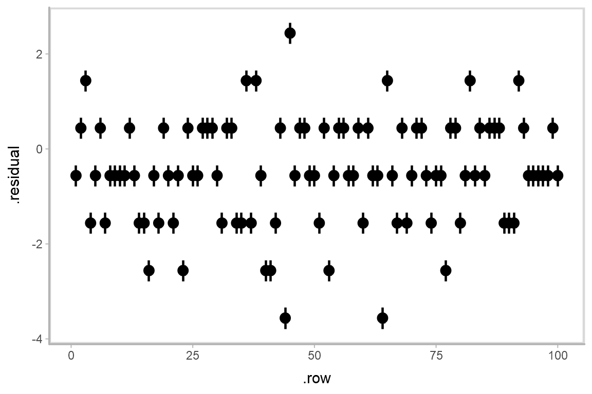
But notice the horizontal striations due to censoring. This obscures patterns we might wish to see in the diagnostic plots. Patterns like this often show up in censored regression, logistic regression, Poisson regression, and other discrete regression models. Notice how brms also gives us a warning message that the residuals may not be meaningful due to censoring.
Let’s look at the QQ plot:
cens_df %>%
add_residual_draws(m) %>%
median_qi(.residual) %>%
ggplot(aes(sample = .residual)) +
geom_qq() +
geom_qq_line()## Warning: Results may not be meaningful for censored models.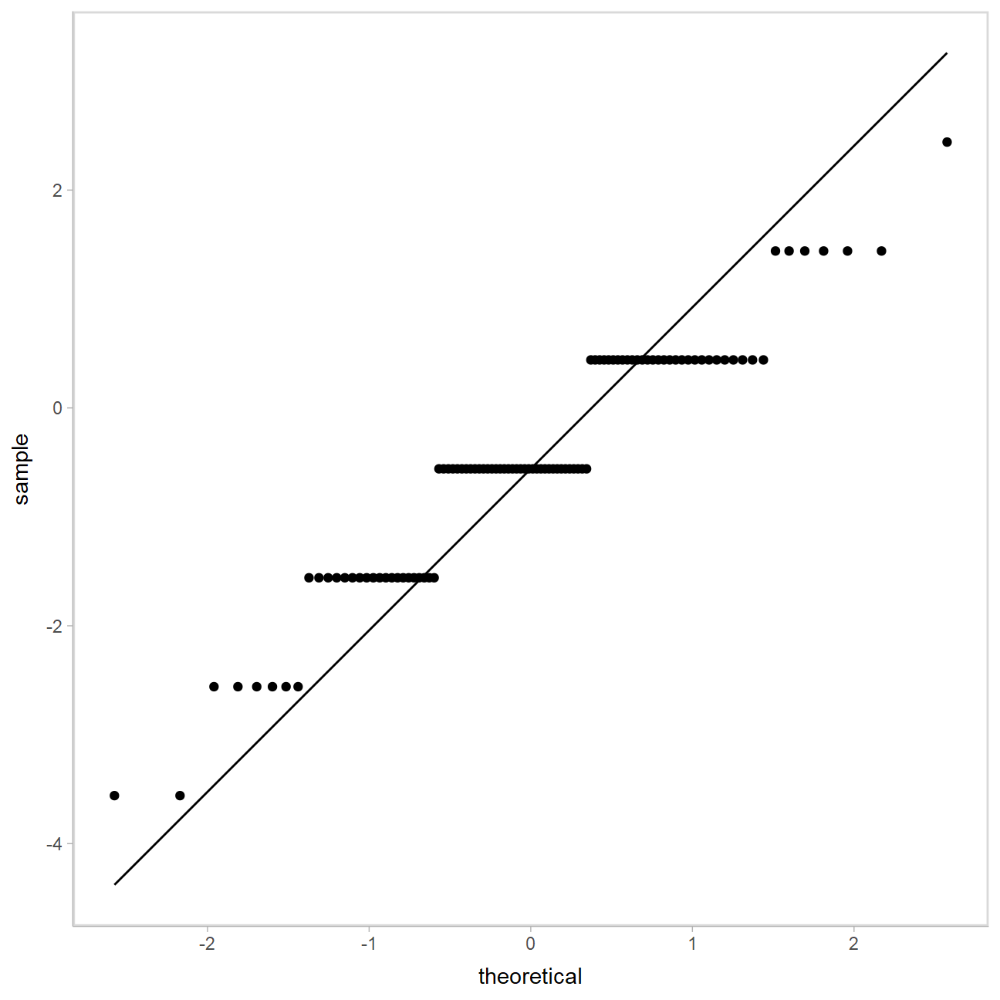
Again, the striations are making interpretation difficult. But there is hope!
Randomized quantile residuals
We can extend the ideas of probability residuals to make randomized probability residuals.
Where the probability residual for the uncensored model was something like this:
\[ p^{*\textrm{resid}}_i = P(y^{*\textrm{rep}}_i < y^*_i|\mathbf{y}^*) \] We can’t calculate the residual for a censored observation this way, as we do not know what \(\mathbf{y}^*\) is, only \(\mathbf{y}^\textrm{lower}\) and \(\mathbf{y}^\textrm{upper}\). However, we do know that \(p^{*\textrm{resid}}_i\) should be in the following interval:
\[ \begin{align*} && p^{*\textrm{resid}}_i &\in (p^\textrm{lower}_i, p^\textrm{upper}_i] \\ &\textrm{where}& p^\textrm{lower}_i &= P(y^{*\textrm{rep}}_i < y^\textrm{lower}_i|\mathbf{y}^\textrm{lower},\mathbf{y}^\textrm{upper}) \\ && p^\textrm{upper}_i &= P(y^{*\textrm{rep}}_i \le y^\textrm{upper}_i|\mathbf{y}^\textrm{lower},\mathbf{y}^\textrm{upper}) \end{align*} \]
If we define a randomized probability residual as:
\[ p^{\textrm{resid}}_i \sim \textrm{Uniform}(p^\textrm{lower}_i, p^\textrm{upper}_i) \]
Then these residuals will be uniformly random (see Dunn and Smyth 1996), and we can similarly define a randomized quantile residual by passing the probability residuals through the Normal inverse CDF:
\[ z^{\textrm{resid}}_i = F_{\textrm{Normal}}^{-1}(p^{\textrm{resid}}_i) \]
In code, that looks like this:
cens_df %>%
add_predicted_draws(m) %>%
summarise(
p_lower = mean(.prediction < y_lower),
p_upper = mean(.prediction < y_upper),
p_residual = runif(1, p_lower, p_upper),
z_residual = qnorm(p_residual)
) %>%
ggplot(aes(x = .row, y = z_residual)) +
geom_point()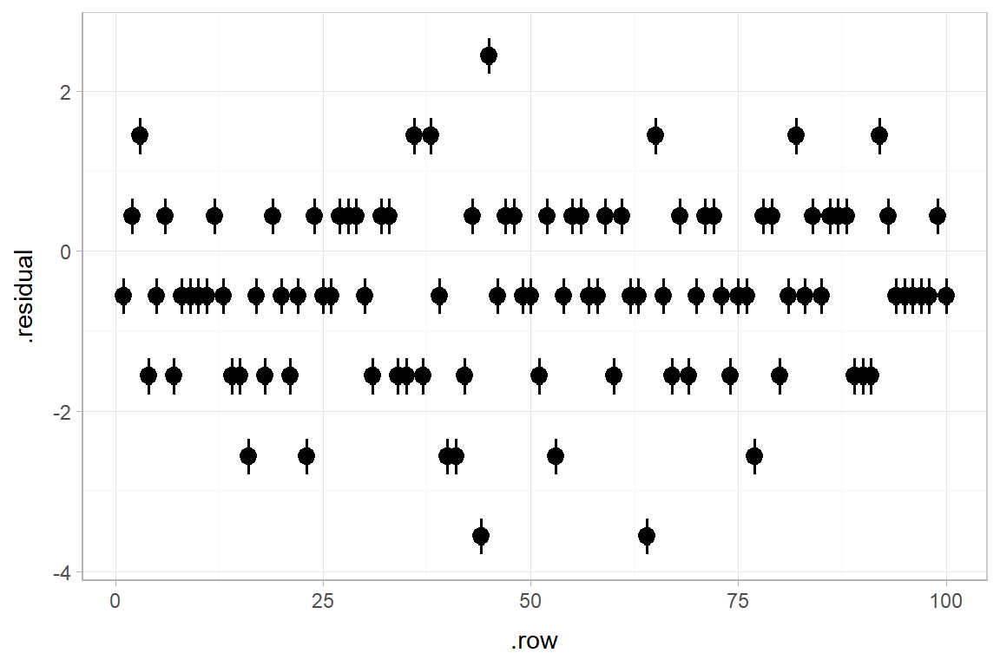
The striations are gone! And a QQ plot:
cens_df %>%
add_predicted_draws(m) %>%
summarise(
p_lower = mean(.prediction < y_lower),
p_upper = mean(.prediction < y_upper),
p_residual = runif(1, p_lower, p_upper),
z_residual = qnorm(p_residual)
) %>%
ggplot(aes(sample = z_residual)) +
geom_qq() +
geom_abline()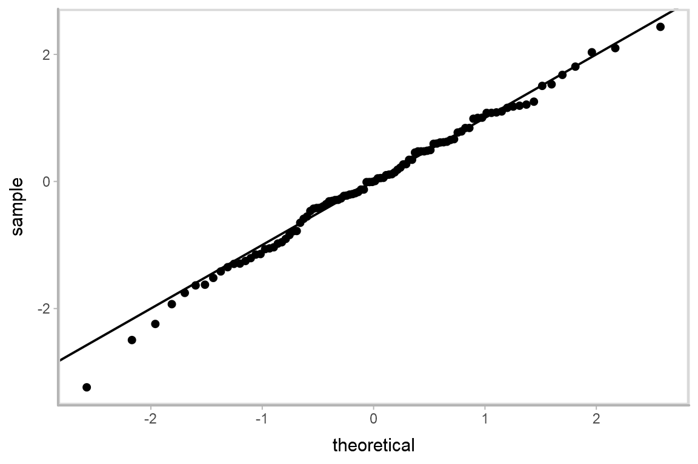
Looks decent. However, our residuals are now subject to noise—we actually have a distribution of possible QQ plots. So, let’s check on some of them to make sure this nice-looking one is not just a fluke. We’ll employ HOPs to do that:
k = 20
p = cens_df %>%
add_predicted_draws(m) %>%
summarise(
p_lower = mean(.prediction < y_lower),
p_upper = mean(.prediction < y_upper),
p_residual = list(runif(k, p_lower, p_upper)),
residual_draw = list(1:k)
) %>%
unnest(c(p_residual, residual_draw)) %>%
mutate(z_residual = qnorm(p_residual)) %>%
ggplot(aes(sample = z_residual)) +
geom_qq() +
geom_abline() +
transition_manual(residual_draw)
animate(p, nframes = k, width = 432, height = 432, res = 96, dev = "png", type = "cairo")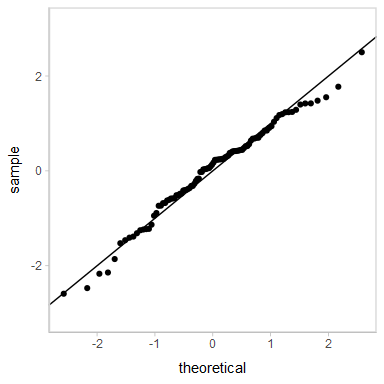
Looks good.
What if the model does not fit well?
Let’s instead generate the data from a t distribution, which should give us some more extreme values:
set.seed(41181)
n = 100
cens_df_t =
tibble(
y = rt(n, 3) + 0.5,
y_lower = floor(y),
y_upper = ceiling(y),
censoring = "interval"
)Note the presence of outliers:
uncensored_plot = cens_df_t %>%
ggplot(aes(y = "", x = y)) +
stat_slabh() +
geom_jitter(aes(y = 0.75, color = ordered(y_lower)), position = position_jitter(height = 0.2), show.legend = FALSE) +
ylab(NULL) +
scale_x_continuous(breaks = -10:10, limits = c(-10, 10)) +
background_grid("x")
censored_plot = cens_df_t %>%
ggplot(aes(y = "", x = (y_lower + y_upper)/2)) +
geom_dotplot(
aes(fill = ordered(y_lower)),
method = "histodot", origin = -4, binwidth = 1, dotsize = 0.5, stackratio = .8, show.legend = FALSE,
stackgroups = TRUE, binpositions = "all", color = NA
) +
geom_segment(
aes(x = y + 0.5, xend = y + 0.5, y = 1.75, yend = 1.5, color = ordered(y)),
data = data.frame(y = unique(cens_df_t$y_lower)), show.legend = FALSE,
arrow = arrow(type = "closed", length = unit(7, "points")), size = 1
) +
ylab(NULL) +
xlab("interval-censored y") +
scale_x_continuous(breaks = -10:10, limits = c(-10, 10)) +
background_grid("x")
plot_grid(align = "v", ncol = 1, rel_heights = c(1, 2.25),
uncensored_plot,
censored_plot
)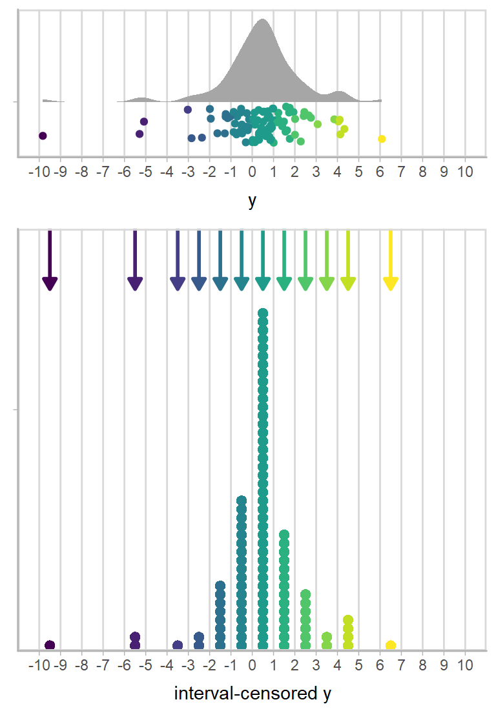
Model
Now, fitting the same model as before:
## Compiling the C++ model## recompiling to avoid crashing R session## Start samplingAnd checking the QQ plot:
cens_df_t %>%
add_residual_draws(m_t1) %>%
median_qi(.residual) %>%
ggplot(aes(sample = .residual)) +
geom_qq() +
geom_qq_line()## Warning: Results may not be meaningful for censored models.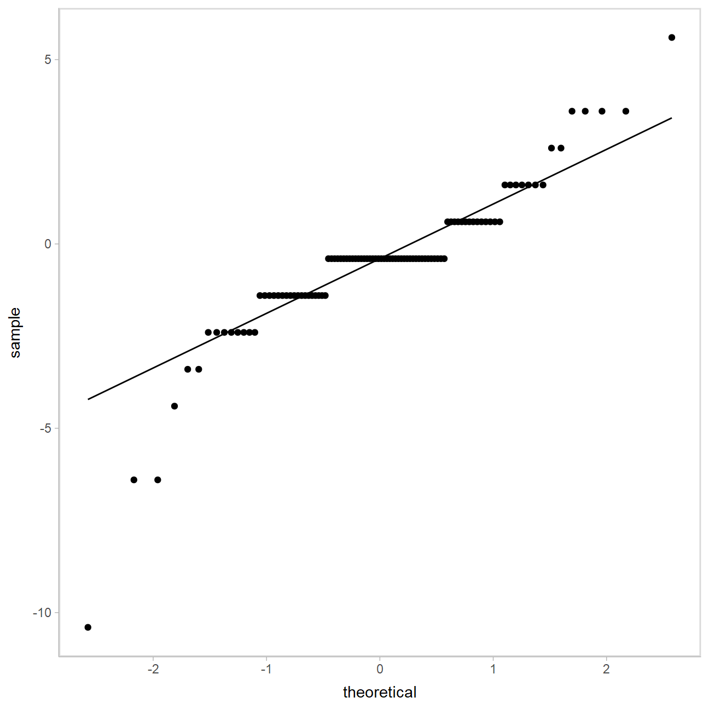
It looks like this could be problematic, but the striations make diagnosing the problem difficult.
Randomized quantile residuals
Let’s try randomized quantile residuals again:
cens_df_t %>%
add_predicted_draws(m_t1) %>%
summarise(
p_lower = mean(.prediction < y_lower),
p_upper = mean(.prediction < y_upper),
p_residual = runif(1, p_lower, p_upper),
z_residual = qnorm(p_residual)
) %>%
ggplot(aes(sample = z_residual)) +
geom_qq() +
geom_abline()## Warning: Removed 1 rows containing non-finite values (stat_qq).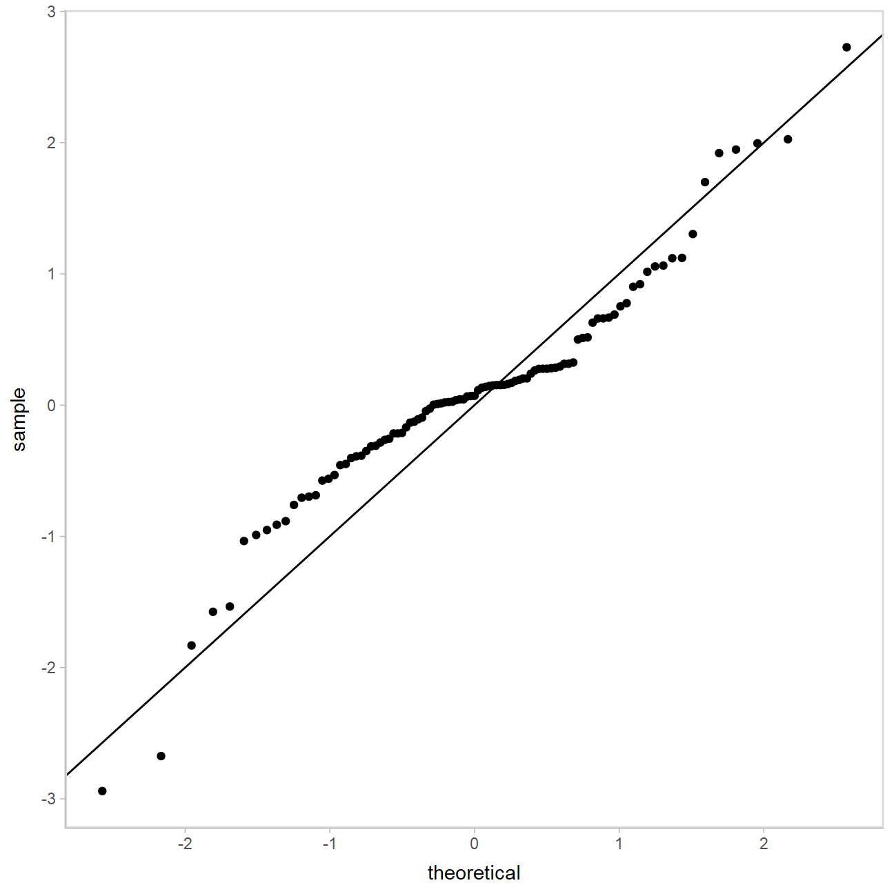
Does not look good for the model—this s-shape is characteristic of excess kurtosis (aka fat tails), which is exactly what a t distribution should produce. But let’s check using HOPs again:
k = 20
p = cens_df_t %>%
add_predicted_draws(m_t1) %>%
summarise(
p_lower = mean(.prediction < y_lower),
p_upper = mean(.prediction < y_upper),
p_residual = list(runif(k, p_lower, p_upper)),
residual_draw = list(1:k)
) %>%
unnest(c(p_residual, residual_draw)) %>%
mutate(z_residual = qnorm(p_residual)) %>%
ggplot(aes(sample = z_residual)) +
geom_qq() +
geom_abline() +
transition_manual(residual_draw)
animate(p, nframes = k, width = 432, height = 432, res = 96, dev = "png", type = "cairo")## Warning: Removed 20 rows containing non-finite values (stat_qq).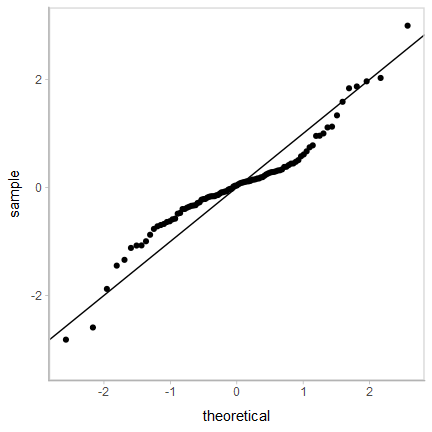
Still not good! But the clear s shape is very diagnostic of fat tails, so let’s try a different model.
Robust interval-censored model
A common model to try to “robustify” linear regression is to swap out the Normal response distribution for a Student’s t distribution, which has fatter tails (it also happens that this is the distribution used to generate the data above, so I am clearly cheating, but also: this had better work).
## Compiling the C++ model## Start samplingLet’s look at the QQ plot of the residuals:
cens_df_t %>%
add_residual_draws(m_t2) %>%
median_qi(.residual) %>%
ggplot(aes(sample = .residual)) +
geom_qq() +
geom_qq_line()## Warning: Results may not be meaningful for censored models.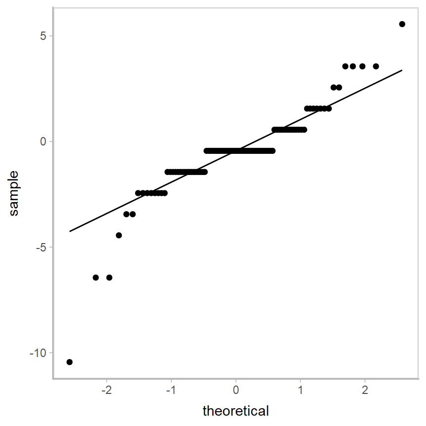
Odd, these don’t look great! But again, these residuals are not to be trusted…
Randomized quantile residuals
Let’s check out the randomized quantile residuals:
k = 20
p = cens_df_t %>%
add_predicted_draws(m_t2) %>%
summarise(
p_lower = mean(.prediction < y_lower),
p_upper = mean(.prediction < y_upper),
p_residual = list(runif(k, p_lower, p_upper)),
residual_draw = list(1:k)
) %>%
unnest(c(p_residual, residual_draw)) %>%
mutate(z_residual = qnorm(p_residual)) %>%
ggplot(aes(sample = z_residual)) +
geom_qq() +
geom_abline() +
transition_manual(residual_draw)
animate(p, nframes = k, width = 432, height = 432, res = 96, dev = "png", type = "cairo")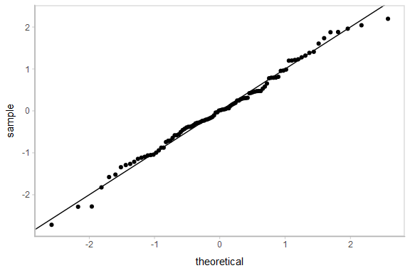
Looking pretty good! As well they should, since this is the same model that generated the data.
Ordinal regression
But we’re not done yet—another sensible choice of model for this data might have been an ordinal regression. So let’s try that too.
First, we’ll add a column that transforms the data into an ordered factor:
Then we’ll fit an ordinal regression model. We have to adjust the fit parameters a bit to get it to converge:
m_o = brm(y_factor ~ 1, data = cens_df_o, family = cumulative,
prior = prior(normal(0, 10), class = Intercept), control = list(adapt_delta = 0.99))## Compiling the C++ model## Start samplingNow, let’s check out those residuals:
cens_df_o %>%
add_residual_draws(m_o) %>%
median_qi(.residual) %>%
ggplot(aes(sample = .residual)) +
geom_qq() +
geom_qq_line()## Error: Predictive errors are not defined for ordinal or categorical models.Gah! brms will not even produce residuals for models like these. This is very sensible, as standard residuals here are hard to define. Fortunately, we can still construct randomized quantile residuals.
Randomized quantile residuals for a discrete distribution
For the interval-censored model, we had:
\[ \begin{align*} && p^\textrm{lower}_i &= P(y^{*\textrm{rep}}_i < y^\textrm{lower}_i|\mathbf{y}^\textrm{lower},\mathbf{y}^\textrm{upper}) \\ && p^\textrm{upper}_i &= P(y^{*\textrm{rep}}_i \le y^\textrm{upper}_i|\mathbf{y}^\textrm{lower},\mathbf{y}^\textrm{upper}) \\ && p^{\textrm{resid}}_i &\sim \textrm{Uniform}(p^\textrm{lower}_i, p^\textrm{upper}_i) \end{align*} \]
But that was for a model with observations of the form \((\mathbf{y}^\textrm{lower}, \mathbf{y}^\textrm{upper}]\) and which can produce a posterior predictive distribution for the latent variable \(\mathbf{y}^{*\textrm{rep}}|\mathbf{y}^\textrm{lower}, \mathbf{y}^\textrm{upper}\). Now our observations are discrete values of \(\mathbf{y}^\textrm{factor}\), and our posterior predictive distribution, \(\mathbf{y}^\textrm{rep}|\mathbf{y}^\textrm{factor}\), is also discrete. So we have to tweak the definition a bit:
\[ \begin{align*} && p^\textrm{lower}_i &= P(y^{\textrm{rep}}_i < y^\textrm{factor}_i|\mathbf{y}^\textrm{factor}) \\ && p^\textrm{upper}_i &= P(y^{\textrm{rep}}_i \le y^\textrm{factor}_i|\mathbf{y}^\textrm{factor}) \\ && p^{\textrm{resid}}_i &\sim \textrm{Uniform}(p^\textrm{lower}_i, p^\textrm{upper}_i) \end{align*} \]
Then we proceed as before:
cens_df_o %>%
add_predicted_draws(m_o) %>%
mutate(.prediction = ordered(levels(y_factor)[.prediction], levels = levels(y_factor))) %>%
summarise(
p_lower = mean(.prediction < y_factor),
p_upper = mean(.prediction <= y_factor),
p_residual = runif(1, p_lower, p_upper),
z_residual = qnorm(p_residual)
) %>%
ggplot(aes(x = .row, y = z_residual)) +
geom_point()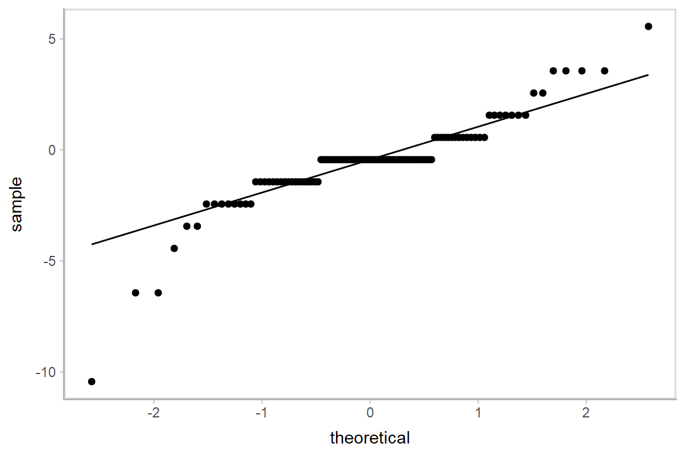
Or in HOPs-QQ plot form:
k = 20
p = cens_df_o %>%
add_predicted_draws(m_o) %>%
mutate(.prediction = ordered(levels(y_factor)[.prediction], levels = levels(y_factor))) %>%
summarise(
p_lower = mean(.prediction < y_factor),
p_upper = mean(.prediction <= y_factor),
p_residual = list(runif(k, p_lower, p_upper)),
residual_draw = list(1:k)
) %>%
unnest(c(p_residual, residual_draw)) %>%
mutate(z_residual = qnorm(p_residual)) %>%
ggplot(aes(sample = z_residual)) +
geom_qq() +
geom_abline() +
transition_manual(residual_draw)
animate(p, nframes = k, width = 432, height = 432, res = 96, dev = "png", type = "cairo")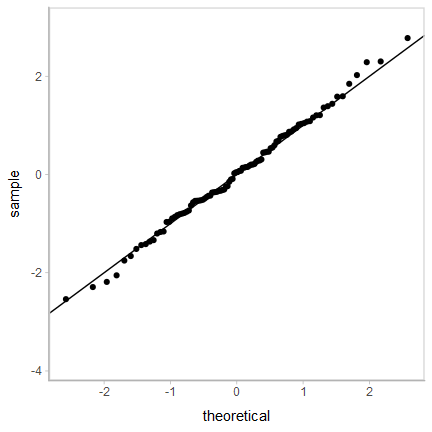
It is not too surprising that the ordinal regression also works here, even though it is not the data generating model. Ordinal regressions are pretty robust.
A function for probability residuals
Here’s a function that can calculate randomized probability residuals for you. A future version of tidybayes will likely supply some variant of this function, but for now, since it is experimental, I have not folded it into the main package yet. Use at your own risk:
library(rlang)
make_probability_residuals = function(data, prediction, y, y_upper = NA, n = 1) {
.prediction = enquo(prediction)
.y = enquo(y)
.y_upper = enquo(y_upper)
if (eval_tidy(expr(is.factor(!!.prediction) && !is.ordered(!!.prediction)), data)) {
data = mutate(data, !!.prediction := ordered(!!.prediction, levels = levels(!!.prediction)))
}
if (is.na(enquo(y_upper)[[2]])) {
#no y_upper provided, use y as y_upper
data = summarise(data,
.p_lower = mean(!!.prediction < !!.y),
.p_upper = mean(!!.prediction <= !!.y)
)
} else {
#y_upper should be a vector, and if an entry in it is NA, use the entry from y
data = summarise(data,
.p_lower = mean(!!.prediction < !!.y),
.p_upper = mean(!!.prediction <= ifelse(is.na(!!.y_upper), !!.y, !!.y_upper))
)
}
data %>%
mutate(
.p_residual = map2(.p_lower, .p_upper, runif, n = !!n),
.residual_draw = map(.p_residual, seq_along)
) %>%
unnest(c(.p_residual, .residual_draw)) %>%
mutate(.z_residual = qnorm(.p_residual))
}Logistic regression
Consider a simple dataset with a single binary outcome:
A model for this might be the following:
## Compiling the C++ model## Start samplingAgain, standard residuals are hard to interpret:
bin_df %>%
add_residual_draws(m_bin) %>%
median_qi() %>%
ggplot(aes(sample = .residual)) +
geom_qq() +
geom_qq_line()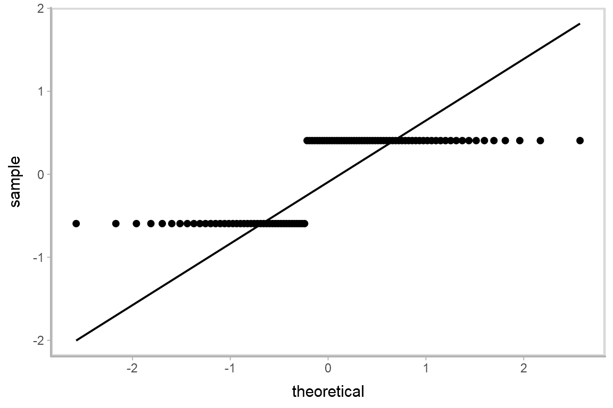
Randomized quantile residuals help us see that the fit is probably reasonable:
k = 20
p = bin_df %>%
add_predicted_draws(m_bin) %>%
make_probability_residuals(.prediction, y, n = k) %>%
ggplot(aes(sample = .z_residual)) +
geom_qq() +
geom_abline() +
transition_manual(.residual_draw)## Warning: Subsetting quosures with `[[` is deprecated as of rlang 0.4.0
## Please use `quo_get_expr()` instead.
## This warning is displayed once per session.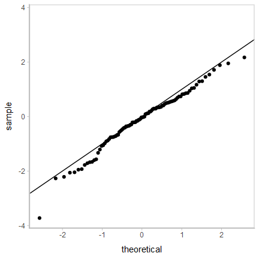
We could also look at the probability residuals instead, comparing them against a uniform distribution, like so:
k = 20
p = bin_df %>%
add_predicted_draws(m_bin) %>%
make_probability_residuals(.prediction, y, n = k) %>%
ggplot(aes(sample = .p_residual)) +
geom_qq(distribution = qunif) +
geom_abline() +
transition_manual(.residual_draw)
animate(p, nframes = k, width = 432, height = 432, res = 96, dev = "png", type = "cairo")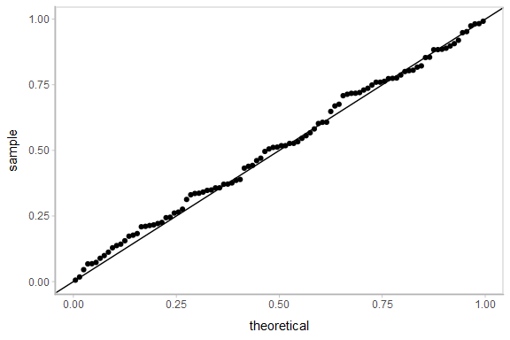